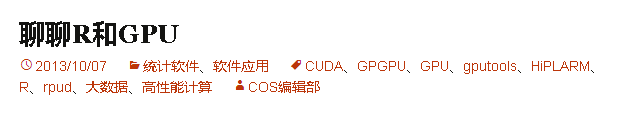
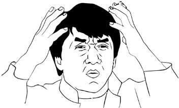
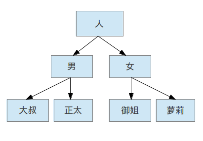
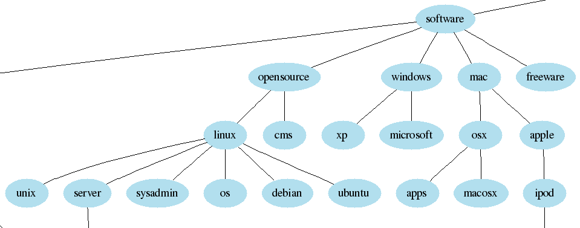

豆瓣网标签的整理和分析
何通
豆瓣算法组实习生
什么是标签？
- 豆瓣电影中的标签
- 豆瓣音乐中的标签
- 豆瓣阅读中的标签


什么是标签
- 用户主动生成
- 对文字内容不加限制
- 是对物品有益的补充说明信息
- 英文里称这样的东西叫做folksonomy(folk+taxonomy)，并不是tag
标签无处不在
除了豆瓣，其实还有很多地方出现了标签：
- 新浪微博中的标签
- 统计之都中的标签
- 

能够做什么？
如果我们利用了物品的标签，就可能可以：
- 更好地细分用户兴趣
- 更好地刻画物品特征
- 实现跨种类推荐
- 向用户推荐标签
- ……
但是……
数据有噪音！
会有千奇百怪的噪音：
- /笑--快乐
- 不用動腦筋但看得很快樂
- ★★★★★★★☆
- \\\\\\\\\\\\\\\\\\\\\\\\\\\\\\\\\\\\\\\\\\\\\\\\\\\\\\\\\\\\\\
- 图图珍藏之不能忽视的好片
- 恩..........
- 在我们梦想美好的未来之前，要先清洗数据
标签的清洗
标签的清洗
我对电影标签的清洗步骤：
- 去掉含有非汉字符号的标签。
- 将所有繁体字转换成简体字
- 抓取物品元信息：即电影的标题、演员、产地等豆瓣已经标记过的内容，并整理成词。
- 一个比较特殊的情况是外国人名。“迈克尔·杰克逊”我会处理成“迈克尔”，“杰克逊”以及“迈克尔杰克逊”，尽量涵盖可能出现的标签样式；
- 将出现在元信息中的标签去除。
标签的清洗

标签的清洗
- 去除太长的标签。
- 从关联物品数、做标记用户数与平均被标记数三个指标上自定义阈值做清理。
- 对于稍长的标签（3～5个字），对他们做切分，再在标签内部进行过滤。
- 例如“经典励志”可以被切成“励志”和“经典”，这是两个已有的标签，那么可以将“经典励志”这个标签去掉。
- 上面的步骤能去掉超过90%的无用标签，可以准备进入到人工清理的步骤。

万事具备？
我以为机器初步清理后, 便可以进行人工清洗了。
可是编辑的反馈居然是这样的：

万事具备？
人工清理的一大目的是去冗余，比如从一群同义词和近义词中选出一个代表用词。
但是剩下的词还是太多了。
- 
近义词识别
近义词识别
假设：意义相近的标签比较容易共同出现在一些物品上。
举个栗子：
医疗剧，医务剧，医疗，医务，医学
这些标签常常共同出现在一个物品上。
近义词识别
近义词识别

近义词识别
近义词也不一定要有相同汉字，例如
神鬼，玄幻，鬼片，灵异
吸毒，大麻，嬉皮，嬉皮士，摇滚
这样的例子还有很多个。
使用聚类？
经过尝试，用skmeans对于标签来聚类的效果并不好，可能是因为如下的原因：
- 很难选到合适的距离函数
- skmeans需要设置聚类的个数；
- 无论什么聚类方法，噪音都会影响效果。
近义词识别
关联规则可以过滤噪音。
| LeftHandSide | RightHandSide | Confidence |
|---|---|---|
| 波洛 | 英剧 | 0.9400000 |
| 波洛 | 推理 | 0.9700000 |
| 医务 | 医疗 | 0.6377953 |
| 医疗 | 医务 | 0.5142857 |
| 棒球 | 体育 | 0.6202532 |
| 棒球 | 励志 | 0.5886076 |
这里出现的就是标签之间的关系了，最右边是置信度，即条件概率
P( RightHandSide | LeftHandSide )
P( 英剧 | 波洛 ) = 0.94
P( 推理 | 波洛 ) = 0.97
etc...
近义词识别
使用这个置信度构图。

近义词识别
构建成图之后，我就使用Gephi软件进行处理。
利用其计算“模块化”的功能，即Community Detection，分析出图中相互关系比较密切的节点。
节点构成了一个个群体，每个群体就是一群近义词了。
近义词识别
一些效果的展示：
两性,中产阶级,中年,伦理,出轨,外遇,婚外恋,婚外情,小三,母子,恋母,情迷,艾滋,艾滋病
医务,医务剧,医学,医疗,医疗剧,美剧
吉他,吸毒,大麻,嬉皮,嬉皮士,摇滚,摇滚乐,毒品,民谣,颓废,药物,金属,嗑药,飞片儿
天才,数学,物理,理论,科学,科学家,量子物理,物理学
平行世界,平行宇宙,平行时空,平行空间,时光倒流,时空穿梭,时空穿越,时间旅行,穿梭时空,穿越,穿越剧,穿越时空
近义词识别
这样人工清洗就更方便了。

清洗之后？
标签是用户对物品特征的补充说明
我们一般都是怎么进行描述的呢？
- 
标签的分层
标签的分层
接下来我们对这些标签建立层次结构。
下图是一个在del.icio.us上建立标签树的部分结果：
- 
标签的分层
首先，按照标签出现的总次数来衡量标签的抽象程度。
- 越抽象的标签层级越接近顶层
使用条件概率决定两个标签之间是否有从属关系
一个标签只能属于排它之前的标签
当标签公路出现时，有
- 70%的可能性出现旅行
- 60%的可能性出现开车
- 20%的可能性出现喜剧
我们就认为公路是从属于旅行的一个标签
如果一个标签基本不从属于其他的标签，我们就直接将它连接到根节点。
- 是一个独立的概念
标签的分层
这时候就有了一棵标签树。

未来的可能应用
惊喜推荐，即防止不断在小范围内推荐物品。
- 推荐电影：
- “潜艇”和“国共”都属于“军事”下
- 所以可以给喜欢看“潜艇”的用户推荐有关“国共”的电影
未来的可能应用
利用豆瓣“书影音”俱全的特性，进行跨种类推荐：
- 书和电影之间相互推荐：
- 给经常标记食谱的用户推荐《舌尖上的中国》系列纪录片
- 日志和书影音相互推荐：
- 给喜欢《明朝那些事》的读者推荐讨论朱元璋的日志
参考文献
Fast unfolding of communities in large networks, Tool made by the authors
Laplacian Dynamics and Multiscale Modular Structure in Networks
Collaborative Creation of Communal Hierarchical Taxonomies in Social Tagging Systems
Evaluating Similarity Measures for Emergent Semantics of Social Tagging
谢谢！
Contact Me:
Blog:Programet
Email:hetong007@gmail.com
Weibo:严酷的魔王
LinkedIn:Tong He